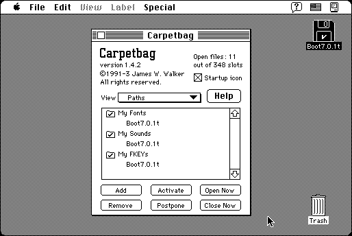

Download
Carpetbag-1.4.3.zip (66K) Carpetbag 1.4.2 repackaged into a zipped hfs disk image and checksum file. The disk image can be mounted with Mini vMac.
Carpetbag-1.4.3.sit.bin (70K) Carpetbag 1.4.2 in the original format.
copyright: James W. Walker
mod date: Feb 16, 1994
license: shareware
from url :
James Walker’s Mac Stuff
A “control panel that makes fonts, sounds, FKEYs, and keyboard layouts available to your programs without altering the System file. Specify certain folders, and Carpetbag opens all resource files therein at startup.”

If you find these downloads useful, please consider helping the Gryphel Project, which hosts them.
Here are the md5 checksums for the downloads, signed with Gryphel Key 5:
--------- GRY SIGNED TEXT --------- f300dd24fd4efeefaf72afed70c61269 Carpetbag-1.4.3.zip b5d6e51cc9c27a0a55c7cdbb1fd00da0 Carpetbag-1.4.3.sit.bin ------- BEGIN GRY SIGNATURE ------- Gry/4Xa8CFcUzxdN/M9viwKwOM8lk/ndtsDlRwbbvyZ7XopL4toPrFGO1DnGB9ng kVvDPMfVjSLPB385u2RuqSnFQ/fm+8ZeTgJrXpdA372yBZw6rx8CEW9pD0TRlqSc ZUMaKOpv2amIIKcp/TBSTssty70pWrMjVjesAcjW+us+b1mx5AuiBY/ngPvOcEW3 -------- END GRY SIGNATURE --------